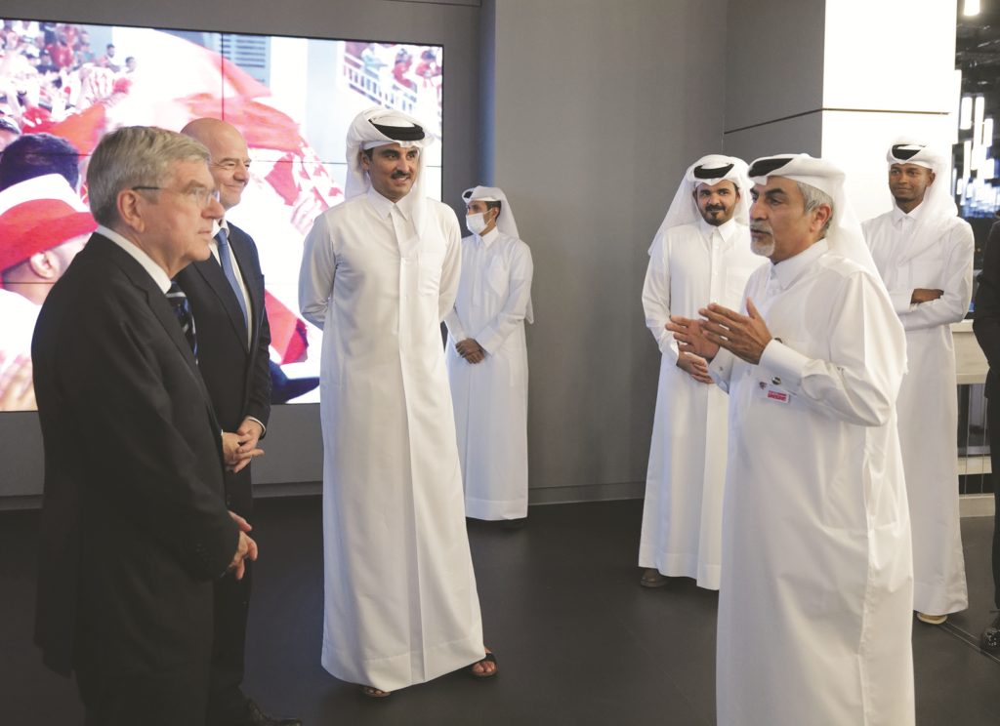
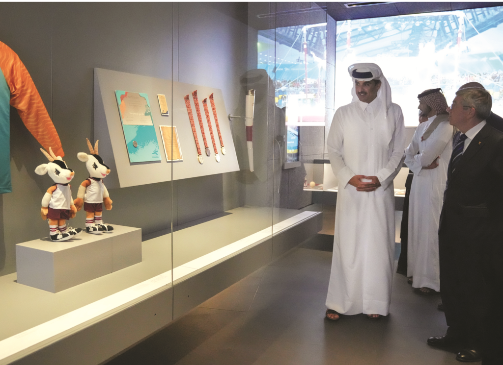
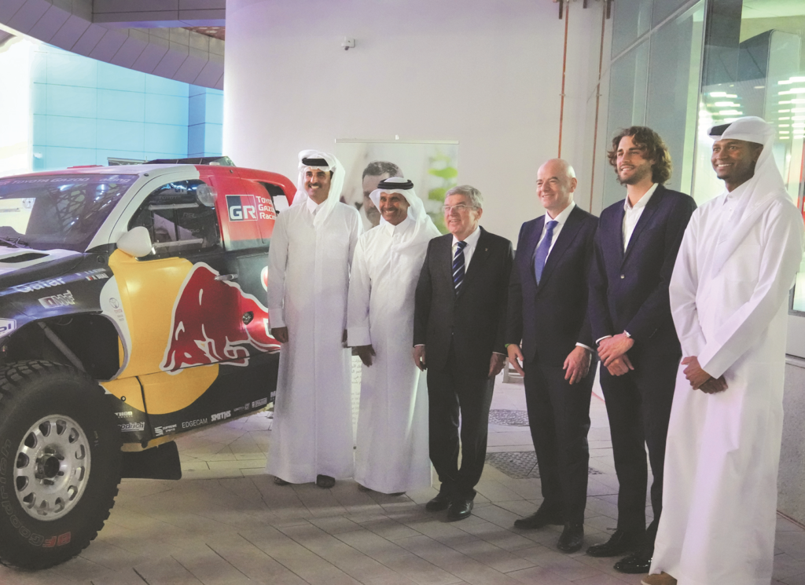
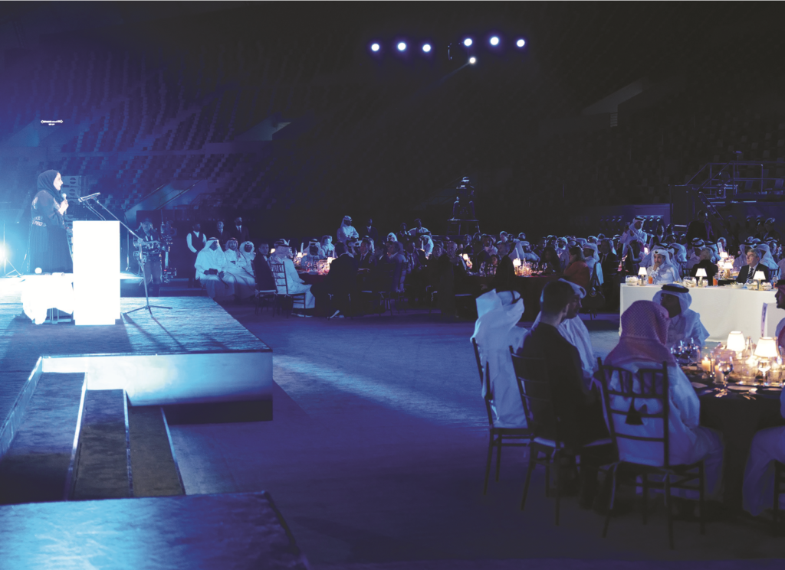
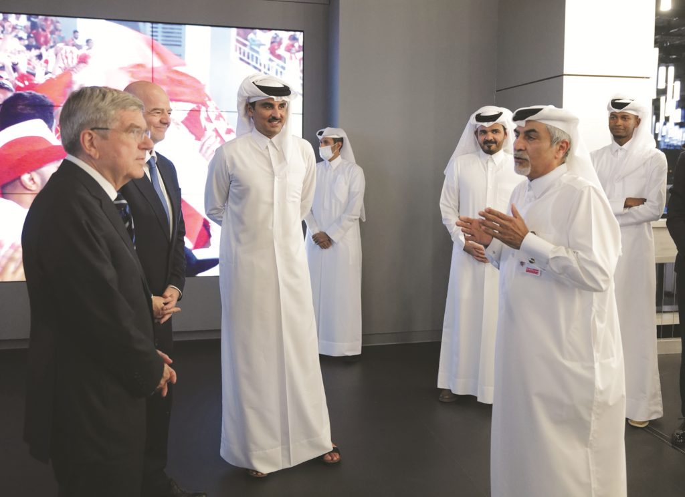
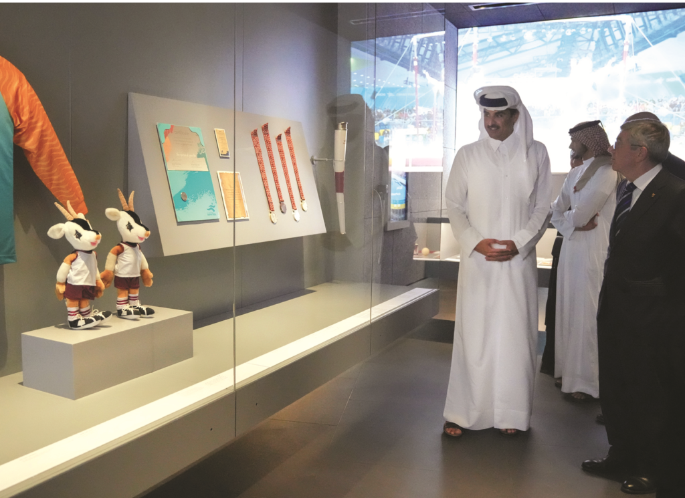
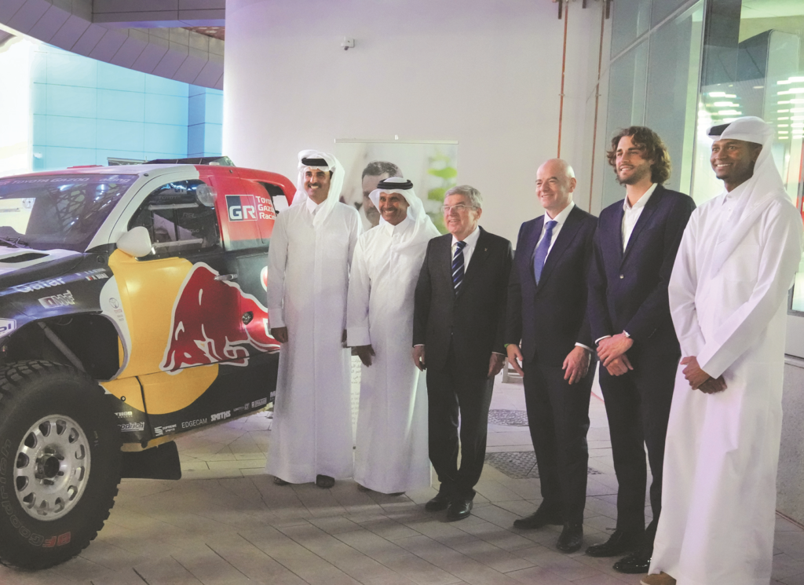
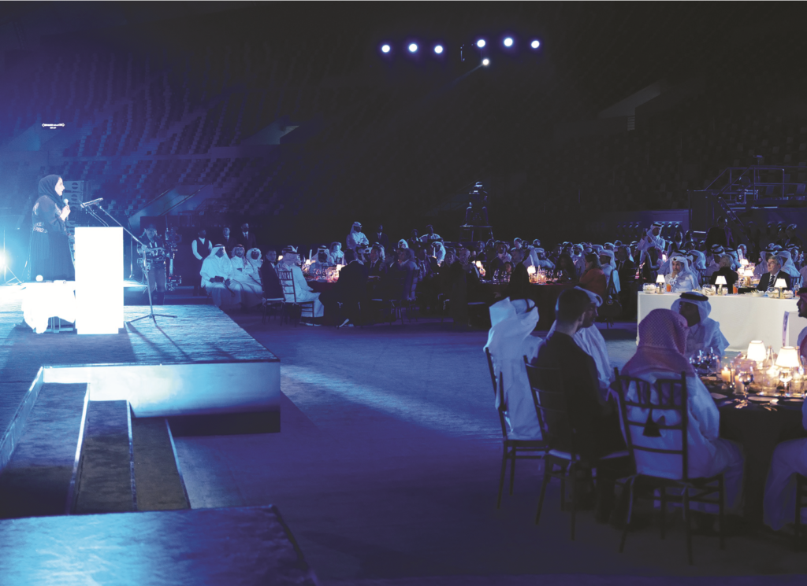

MUTAZ BARSHIM is an honoured guest at the opening of 321 Olympic Museum in Qatar
His Highness the Amir Sheikh Tamim bin Hamad al-Thani patronised the inauguration ceremony of the
3-2-1 Qatar Olympic and Sports Museum, at Khalifa International Stadium Wednesday evening.
His Highness the Amir toured the various sections of the museum where he was briefed on the exhibits
and collection that chronicles sports and Qatari athletes, the history of the Olympic Games in
Qatar, and the most important developments in sports culture among Arabs in particular and the world
in general. His Highness the Amir also toured the galleries that house sports collectibles and
photos from all over the world, and display screens that include information on the types of sports
and Olympic games.
The inauguration ceremony included a performance by the children’s choir of Qatar Philharmonic
Orchestra and a speech by HE Chairperson of Qatar Museums Sheikha Al Mayassa bint Hamad al-Thani.
 






